NEXUS LAUNCHER
User Guide
Everything your home screen can do, from the first swipe to the last widget.
User guide
Everything your home screen can do.
From the first swipe to the last widget. Menu names match the app. Chapters that do not have a capture yet show a frame you can fill in later.
How to use this manual
Menu names are written exactly as they appear in the app, in quotes, for example
Settings › Home Screen › Grid Layout.
Every illustration is a real screenshot of the launcher, kept in
assets/guide/. A frame marked Screenshot coming fills in by
itself as soon as its image file is added to that folder.
The manual is print-ready — use your browser's Print command and choose “Save as PDF”,
or download the PDF.
Chapter 1
Getting started
Nexus Launcher replaces your phone's home screen. It keeps the things you expect — a grid of apps, a dock, folders, widgets — and adds a drawer with three layouts, a customizable status row, an optional live pill called Nexus Island, and a design tool for building your own home screen pieces.
First launch
On a new install Nexus shows a short, skippable setup sequence. Every card has Skip, and your place is remembered — if Android restarts the launcher when you change the default Home app, setup resumes where you left off.
- Welcome to Nexus. Pick how to start: Start fresh (clean defaults), Import from Nova Launcher, or Restore a Nexus backup. The last two finish setup and take you straight to Backup & Restore.
- Theme. Light, dark, or follow your phone.
- UI Style. How widgets, folders and the dock look. Try each one — the choice is applied immediately.
- Wallpaper. Choose a Nexus-made wallpaper or open Wallpaper Studio.
- Feed page. Swipe right on the home screen to reach your news feed. You can turn this off here or later in Home Screen settings.
- Permissions. Allow only what you want to use. Each row reads Allow until granted, then ✓ Granted.
- Default Home App. Tap Set Default so the Home button and home gesture open Nexus.
You can skip every step and still change all of it later. Nothing in setup is permanent.
What each permission unlocks
Nexus asks for nothing at install time. These are granted individually, and every one can be reviewed later in Settings › Notifications & Permissions › System & Permissions.
| Permission | What it enables | Without it |
|---|---|---|
| Notification Access | Badge counts, the in-launcher notification sheet, the Music widget | No badges; the sheet sends you to system settings |
| Storage & Media Access | Blur behind third-party wallpapers on Android 12 and below | Frosted surfaces look flat |
| Accessibility Service | Global gesture actions such as Lock Screen, and Strict Lock Mode | Those specific actions are unavailable |
| App Usage Access | Recent apps in the drawer and search, and usage rings on star pages | Recent apps sections stay empty |
| Location Access | Weather widget, weather status item, Wi-Fi network name | Weather asks for location when opened |
| Contacts Access | Contact results in search | Search returns apps only |
| Nearby devices | Connected Bluetooth device in Nexus Island and the status row | That Island event is skipped |
Storage & Media is only requested on Android 12 and below. On newer versions Nexus uses the system photo picker, which needs no permission.
Setting Nexus as your default launcher
If you skipped the last setup card, open Settings › Home Screen and use the default-launcher banner at the top, or go through Android's own Settings › Apps › Default apps › Home app.
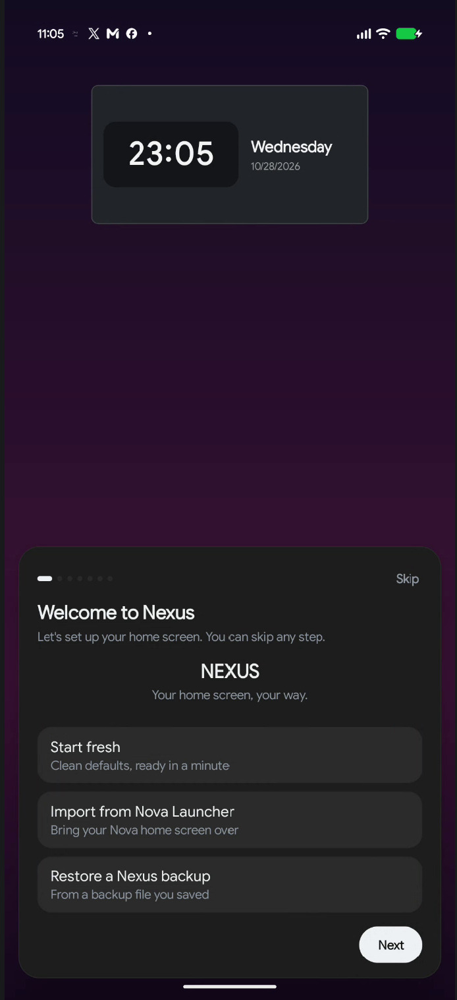
welcome-card.jpg
Chapter 2
The home screen
Everything on the home screen lives on a grid. Apps, folders, shortcuts and widgets all snap to it, and every control that changes the grid is in Settings › Home Screen.
Grid Layout
| Setting | Range or options | Default | Notes |
|---|---|---|---|
| Columns | 4–12 | 6 | On a tablet or unfolded foldable this edits the large-screen grid, used in both orientations. |
| Rows | 5–15 | 10 | Same large-screen behavior as Columns. |
| Icon Size | 40–100% | 65% | Scales icons inside their cell. Labels are unaffected. |
| App Label | On / Off | On | Turns app names off and on. |
| Two-line labels | On / Off | Off | Wraps long names onto a second line. Dimmed while App Label is off. |
| Page Indicator | On / Off | On | The dots above the dock. |
| Show Dock | On / Off | On | When off, the grid uses the dock's space. Your dock apps are kept. |
These three wait for the Apply bar at the bottom of the page. Everything else on the page takes effect immediately. Leaving the page with pending changes asks whether to discard them.
Screen Spacing
Four sliders let you tighten or loosen the layout. Negative values pull the grid past the screen edge or pull rows together; icons shrink to fit rather than overlap.
| Setting | Range | Default | Effect |
|---|---|---|---|
| Padding Horizontal | −4 to 64 dp | 0 dp | Left and right screen margin |
| Padding Vertical | −32 to 64 dp | 0 dp | Top and bottom screen margin |
| Gap Horizontal | 0 to 64 dp | 0 dp | Space between icons in a row |
| Gap Vertical | 0 to 64 dp | 0 dp | Space between rows |
Transitions
The Page Transition row chooses how one page becomes the next: None, Slide (default), Fade, Cube, Zoom, Flip and Gravity Fold.
- Reduce Motion — minimizes launcher animations. Moving transitions become a fade, and bounce and overshoot are removed across the app.
- Transition Speed — 50–200%, default 100%. Higher values make the animation take longer.
- Swipe right to access RSS feed — shows the news feed on the leftmost screen. On by default.
Turn on Reduce Motion, then pick Fade or None as the page transition. Cube, Flip, Zoom and Gravity Fold are the most animated options.
Adding things to the home screen
There are four ways to put something on the grid:
- From the drawer. Long-press an app and drag it up, or use the drawer's selection bar and choose Pin.
- Long-press empty space. The radial menu offers Apps, Widgets, Folder and Shortcut.
- Widget picker. Tap a widget to drop it at the centre of the page, or drag it to an exact spot.
- Widgets from an app's menu. Long-press an app that provides widgets; a Widgets row appears only when the app actually has some.
Working with icons
Long-press a home-screen icon to open its menu:
- Select — starts multi-select (see below).
- Edit — rename the app, choose a custom icon, change its shape, and set per-app gestures.
- Lock App / Unlock App — protects the app with your fingerprint, face or screen lock.
- Resize — lets the icon span more than one cell. Apps only; not offered in the dock.
- Remove — takes this copy off the home screen. The app stays installed and stays in the drawer.
The same app can appear several times. Removing one copy removes only that copy — never the others.
Multi-select
Choose Select from any icon menu, then tap more icons to add them. A ring appears around each selection and a bar shows how many you have picked, for example "3 selected".
- Home screen: Remove, Create Folder (two or more apps), and Uninstall (one app at a time).
- Drawer: Pin to place the selection on the home screen, Hide App, and Create Folder.
- The home screen zooms out slightly while selecting so the bar never covers icons.
- Only the X button leaves selection mode. Tapping empty space does nothing, and the drawer still scrolls normally.
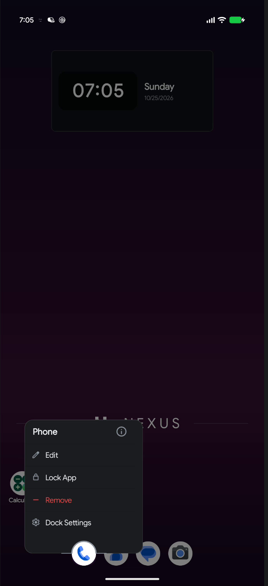
icon-menu.jpg
Chapter 3
Pages and the home layout
You can have as many home pages as you like. Swipe left and right to move between them; the dots above the dock show where you are.
Manage Pages
Open it from the radial menu: long-press empty space, then choose Pages. The screen shows a two-column grid of phone-shaped page cards.
- The header counts your pages and names the Home one, for example "3 pages · Home is 1".
- Each card shows a live thumbnail of that page, including its widgets.
- The default page carries a Home badge.
- Set a page as Home with the home chip on its card. The Home button, the home gesture and closing all apps return to that page.
- Reorder by long-pressing a card and dragging it.
- Delete with the delete chip. An empty page goes immediately; a page with items asks first and names the count. The last remaining page cannot be deleted.
- Add a page with the dashed Add Page card.
Reordering pages moves each page's own settings with it, and deleting a page cleans up anything that belonged only to that page. Your Home page setting is adjusted automatically so it never points at a page that no longer exists.
The radial menu
Long-pressing empty home space opens an eight-slice radial menu at your finger. It tracks your finger without lifting, so you can slide straight onto an option; move far enough away and the menu cancels.
| Slice | What it does |
|---|---|
| Apps | Pick apps to place on the grid |
| Widgets | Open the widget picker |
| Wallpaper | Open the wallpaper sheet |
| Pages | Open Manage Pages |
| Folder | Create an empty folder at that spot |
| Shortcut | Add a shortcut |
| Settings | Fan out ten shortcuts: Home, Drawer, Dock, Theme, Icons, Typography, Gestures, Search, Notifications, Backup |
| Lock Layout | Changes the slice label to a locked state |
Moving things around
- Within a page: long-press and drag. The target cells highlight, and the icon drops into the cell under its centre.
- Across pages: hold an icon near the left or right edge of the screen and the launcher turns the page for you.
- Into the dock: drag all the way down; the drop only commits when your finger is genuinely over the dock.
- Onto another icon: creates a folder from both apps. A red highlight means the drop will be refused.
- Rotation and grid changes: icons keep their physical place on screen instead of clustering in a corner. If a smaller grid has no room, items spill to the next free cell or page rather than disappearing.
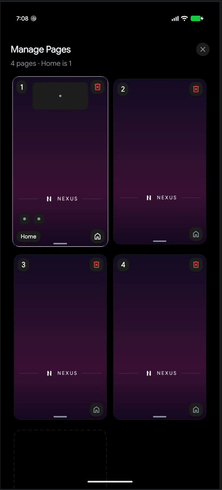
page-cards.jpg
Chapter 4
Gestures
Nexus has three kinds of gesture: swipes on empty home space, swipes on an individual icon or folder, and swipes inside the drawer. All of them are configurable.
Home screen swipes
Find these in Settings › Gestures.
| Gesture | Default action | Notes |
|---|---|---|
| Swipe Up | Open App Drawer | Only starts on empty home space with the drawer closed |
| Swipe Down | Open Search | Same |
| Two-Finger Swipe Up | None | Optional |
| Two-Finger Swipe Down | None | Optional |
Actions you can assign
The action picker groups its options as Navigation, System, Launcher and Shortcuts.
- None
- Open App Info
- Lock Screen
- Toggle Flashlight
- Open App Drawer
- Open Specific App
- Open Specific Page
- Open Specific Folder
- Open Specific Shortcut
- Expand Notifications
- Open Quick Settings
- Show Recents
- Take Screenshot
- Show Power Menu
- Open Search
- Next Page
- Previous Page
- Toggle Labels
- Home Edit Mode
- Split Screen
The picker marks it "Requires accessibility". Enable the service in Settings › Notifications & Permissions first, or the action will not fire.
Gestures on a single app or folder
Long-press an icon → Edit. The Gestures section offers Swipe Up, Swipe Down and Double Tap. This is how you launch one particular app or shortcut without opening the app first — for example swipe up on your camera icon to open the gallery.
Drawer and page swipes
- Swipe up on the home screen opens the drawer; swipe down inside the drawer closes it. A fast flick completes the motion, and the midpoint decides when you let go slowly.
- Swipe left or right to change home pages. The page follows your finger.
- Swipe right from the first page opens the news feed, if it is enabled.
- Swiping over a widget still pages the home screen; a scrollable list inside a widget scrolls first, and pages the home screen once it reaches its end.
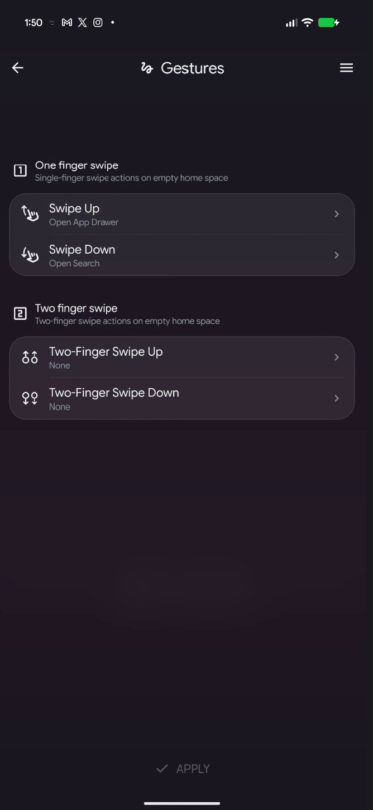
gestures.jpg
Chapter 5
The app drawer
Swipe up on the home screen. The drawer has three completely different modes, and each one has its own layout controls.
Choosing a drawer mode
Go to Settings › App Drawer › Layout, or open the drawer's overflow menu (the three lines beside the search pill) and use its Layout row.
| Mode | What it looks like | Extra layout option |
|---|---|---|
| Grid | Classic columns of icons with labels | 2–10 columns |
| List | One or two wide columns; can group apps under letter headings | 1–2 columns (up to 4 on a large screen) |
| Categories | Apps organised into category cards | Spatial, Strip or List |
Category layouts. Spatial shows a hero card with peeking side cards. Strip is a horizontal row of category cards with a See all link on each. List stacks categories with a letter rail like the Grid mode.
Layout settings
- Columns — as above. Dimmed in Categories mode.
- Group by letter — only in List mode with A–Z sorting. Adds letter headings between apps.
- Icon Size — 40–85%, default 65%.
- App Label and Two-line labels — the drawer has its own label settings, independent of the home screen.
- Sort Order — A–Z, Z–A or Recently Installed. The A–Z rail hides itself for non-alphabetical sorts.
- Transition — Default, 3D Cube, Zoom, Tilt or Card Stack.
Search and navigation
| Setting | Options | Default |
|---|---|---|
| Search Pill | On / Off | On |
| Search Pill Position | Top / Bottom | Top |
| Categories | On / Off | On |
| Category Style | In Pill / Dropdown / Strip | In Pill |
| Category Bar Position | Top / Bottom | Top |
| Side Rail | On / Off | On |
| Show recent apps | On / Off | Follows drawer mode |
Getting around the drawer
- A–Z rail. Drag along the right edge and the drawer scrubs through the alphabet, with a bubble showing the current letter and a tick for each one. Letters with no apps are dimmed.
- Category bar. Tap a chip to filter. The chip menu also offers New category, Edit categories and Sort apps; inside edit mode, tapping an icon or name changes it, and Restore default categories undoes your edits.
- Recent apps. A section at the top of the drawer showing what you used lately. It needs App Usage Access; without it the drawer offers Tap to enable Recent Apps.
- Overflow menu. Hidden Apps, Create Folder, Drawer Settings, plus inline rows for Layout, Columns, Style, Sort Order, Group by letter, Recent apps and the bar position.
Hiding apps
Long-press an app in the drawer and choose Hide App, or select several and use the selection bar. Hidden apps are listed in Settings › App Drawer › Hidden Apps, where each one has an Unhide button.
A hidden app is out of sight, not protected. To require authentication before an app opens, use App Lock.
Drawer folders
Create one from the overflow menu (Create Folder, titled New Folder) or by selecting two or more apps and choosing Create Folder. Drawer folders appear at the top of the drawer and open the same way home folders do.

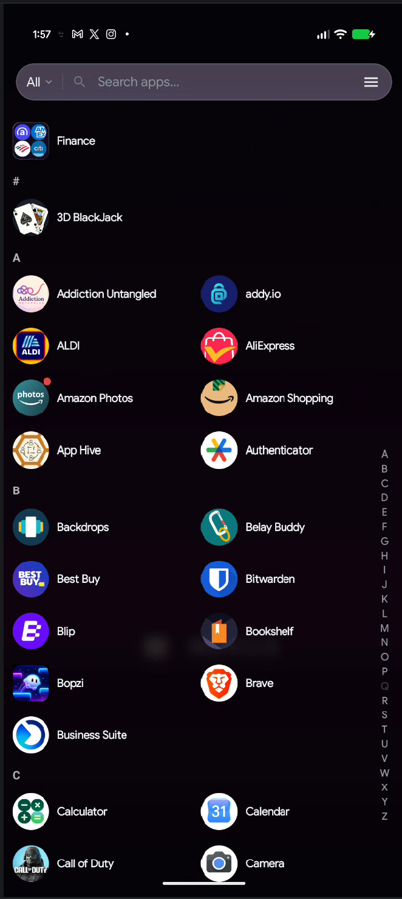
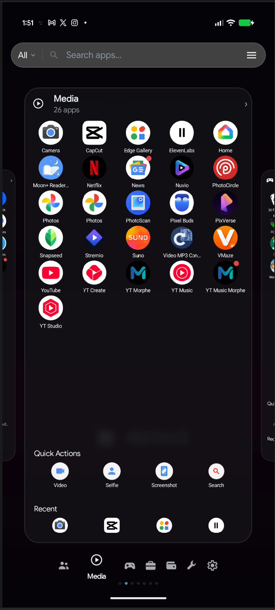
app-drawer-categories.jpg
Chapter 6
Folders
Folders work on the home screen, in the dock and in the drawer. Opening one shows a floating card anchored to the folder icon rather than a full screen, so you never lose sight of where you came from.
Creating and filling a folder
- Merge two apps: drag one icon onto another.
- Merge a selection: multi-select two or more apps, then Create Folder.
- Start empty: radial menu → Folder.
- Add apps later: drag an app onto the folder icon, or open the folder and use its Add button.
Dropping an app into a folder that already contains it is refused, with an explanation. This keeps folders predictable when you are reorganising in a hurry.
Inside an open folder
- Tap an app to launch it.
- Long-press an app for Remove from Folder, its shortcuts, App Info and Uninstall.
- Reorder: long-press an icon and drag; the surrounding icons slide aside to show where it will land.
- Sort: tap the Sort button to arrange the folder alphabetically. The new order is saved immediately.
- Drag out: pull an icon past the edge of the folder card and it is handed to the home screen, where you can drop it anywhere.
- Close: tap outside the card, or press Back.
Editing a folder
Open the folder and tap Edit. The sheet groups its controls into Appearance, Layout and Gestures.
| Section | Controls |
|---|---|
| Name | The folder name, edited inline |
| Preview Style | Grid, Fan of 3, Hero + Orbit, Custom Icon, Bento — how the closed folder icon looks |
| Appearance | Window and icon opacity, glass refraction, expressive gradient |
| Layout | Columns inside the open folder, and Show App Labels |
| Gestures | Swipe Up, Swipe Down and Double Tap on the folder icon |
Icon Opacity affects the closed folder icon on the home screen. Window Opacity affects the card you see when the folder is open. They are independent, so a subtle icon can still open into a solid card.
Folder settings that travel
- If you drag a folder into the dock, its appearance and contents come with it.
- Deleting a folder deletes the folder and its contents together; you are asked first and told how many apps are inside.
- Backups include folder covers and the apps inside, and restore them in the correct order.
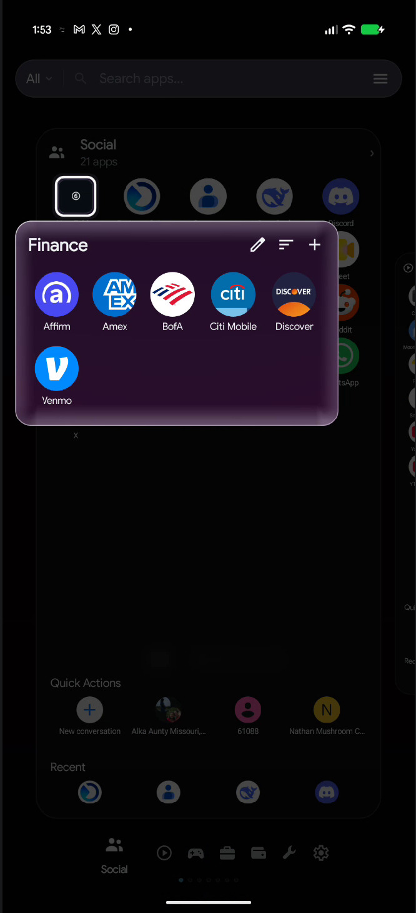
folder-open.jpg
Chapter 7
The dock
The dock is the strip of apps at the bottom of the home screen. It holds apps and folders, and it scrolls when you put more items in it than the maximum you have set.
Opening Dock Settings
Three routes, all leading to the same sheet:
- Settings › Dock
- Long-press an empty part of the dock
- Long-press a dock icon and choose Dock Settings
Layout & sizing
| Setting | Range | Default |
|---|---|---|
| Max Icons | 1–10 | 4 |
| Icon Size | 32–72 dp | 48 dp |
| Height | 60–120 dp | 90 dp |
| Corner Radius | 0–40 dp | 20 dp |
Background
- Background swatches — none, fifteen gradients, or a solid colour.
- Opacity — 0–100%, default 80%. In Liquid Glass this row is labelled Liquid clarity.
- Glass Refraction — 0–100%, default 70%. Labelled Refraction amount in Liquid Glass.
- Liquid Glass extras — Liquid blur, Refraction height (8–48 dp) and Chromatic aberration.
- Expressive Gradient — turns a frosted gradient background on or off.
Labels & search
- Show Labels — off by default.
- Font Size — 8–16 sp, only visible when labels are on.
- Show Search — adds a search control to the dock.
Dock Settings uses Reset and Apply. Closing with unsaved changes asks before discarding, and Reset offers to restore the default dock apps as well as the default appearance.
Using the dock
- Tap an app to launch it; tap a folder to open it.
- Long-press an app for Edit, Lock App, Remove and Dock Settings. Dock menus do not offer Resize or Select.
- If the dock holds more items than Max Icons, swipe sideways inside it to reach the rest; a small indicator shows the dock's pages.
- In landscape the dock becomes a strip along one side, and the grid makes room for it.
Turn off Show Dock in Home Screen settings and the grid expands into that space. Your dock apps are kept, so turning it back on restores them.
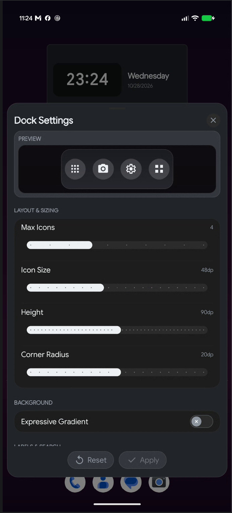
dock-settings.jpg
Chapter 8
Widgets
Nexus hosts Android widgets like any launcher, and adds its own set that are drawn to match the theme. The picker has two tabs: Nexus for the built-in widgets and All for everything installed on your phone.
Placing a widget
- Long-press empty home space and choose Widgets.
- Search with Search widgets…, or browse a tab.
- Tap a widget to drop it in the middle of the page, or long-press and drag it to the exact spot you want.
A page has a maximum number of widgets and will say so. Invalid drops are refused with Drop not allowed rather than placed somewhere unexpected.
Nexus widgets
| Widget | Size | What it does |
|---|---|---|
| Living Mosaic | 3×3 | A container of several widgets with pages and a focus mode |
| Shortcut Box | 2×2 | A grid of shortcut buttons, including Nexus actions |
| App Box | 2×2 | A tidy grid of apps inside a card |
| Recent apps | 3×3 | Your most recently used apps, newest first |
| Music | 100×80 dp | Playback controls and the current track |
| Weather | 100×80 dp | Current conditions and forecast |
| Calendar | 100×80 dp | Month grid and week strip |
| Clock | 100×80 dp | Time, date and temperature |
| Glance | 180×90 dp | Clock, date and weather in one block |
| Agenda | 140×110 dp | Your next events as a schedule |
| Notes | 140×110 dp | A scratchpad with urgency, status and progress |
| Battery | 100×80 dp | Charge level and power details |
| Device Performance | 180×110 dp | CPU, memory, storage and temperature |
| Search | 350×56 dp | A search bar; resizes horizontally only |
The Progress Bar widget is present in the app but withheld from the picker in this release, so you will not see it.
Moving, resizing and replacing
Long-press a placed widget for its menu:
- Move — drag it, or use the arrow pills for precise nudges.
- Resize — eight handles, with snapping and a tick at each cell boundary. You can also nudge one edge at a time.
- Elevation — controls which widget sits in front when two overlap. Shown as Z: 2.
- Replace — pick a different widget; the old one is only removed once the new one is placed.
- Padding — hosted widgets only. Adds breathing room inside the card.
- Settings — the widget's own options.
- Remove.
Long-pressing a widget does not blur the workspace. Neighbouring widgets, folders and icons stay sharp so you can size one against the others; only the menu panel itself is frosted.
Widget appearance
Most Nexus widgets share two options in their settings sheet:
- Widget Theme — Follow the launcher theme, or pin Light / Dark for that one widget.
- Widget UI — Soft UI, Glass or Solid.
Living Mosaic
A Mosaic is a small window onto several widgets at once. Add one, then drag widgets into it or use Add Widget from its menu.
- Pages. A Mosaic can hold multiple pages of widgets; swipe to change page.
- Mosaic mode shows the whole page and reflows as you swipe. Focus mode shows one widget at a time in a fixed-size carousel.
- Mosaic Studio (from Settings in the Mosaic menu) offers Opacity, Glass Refraction, Mosaic Shape (Squircle or Square), Expressive Mode, eight layout templates, page add/remove, and the default mode.
- Scrollable children still scroll. Swiping on a list inside a Mosaic scrolls the list first; once it reaches the end, the swipe changes Mosaic page.
- A Mosaic holds up to twelve widgets per page.
Shortcut Box, App Box and Recent apps
- Shortcut Box — tap an empty well to choose a shortcut. Eight Nexus shortcuts are built in: App drawer, Bluetooth, Flashlight, Dark theme, Do Not Disturb, Wi-Fi, Volume panel and System settings. Long-press a filled slot to change or remove it.
- App Box — tap an empty well to choose an app; labels can be turned on or off.
- Recent apps — fills itself from App Usage Access. Apps you uninstall drop out on their own.
- All three share the same sizing options: icon spacing (Tight, Normal, Wide) and a widget theme.
Widget permissions
A few widgets need data you must allow first. Weather asks for location; Calendar and Agenda ask for calendar access; Music needs Notification Access to read the current track. Each widget shows a clear prompt instead of failing silently.
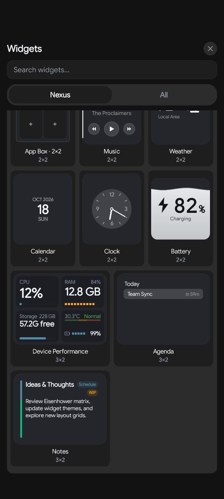
widget-picker.jpg
Chapter 9
Nexus Canvas
Canvas is a design board you place on a home page like a widget. Instead of arranging icons in cells, you compose a rectangle out of pieces — large type, a clock, the weather, a music player, app strips, folders, photos, shapes and stickers — and position each piece exactly where you want it.
Settings › Canvas. Saved designs appear in the Canvas Library; + creates a new one.
Creating a design
- Tap + in the Canvas Library.
- Choose a footprint: Edge to Edge (the whole screen, with guides for the cutout and dock) or Custom Grid (a rectangle inside the normal workspace, minimum 3×3 cells, up to your current grid size).
- Tap Create Canvas. The new design is called Untitled Canvas until you rename it.
Canvas Studio
The editing screen has four actions along the top:
| Action | What it does |
|---|---|
| Layers | Reorder or delete layers; tap a layer for its own actions |
| Style | Theme, UI style, glass tuning, icon pack, labels and tile spacing |
| Save | Saves the design without placing it |
| Apply | Saves and places the design on the home screen |
Undo and Redo sit at the bottom left. Tap the title to rename the design.
What you can add
The add menu holds ten entries:
- Templates
- Add Component
- Add App
- Add Icon Strip
- Add Folder
- Add Shortcut
- Shortcut strip
- Image
- Add Widget
- Background
Studio Components are grouped by category: All, Shapes, Clocks, Weather, Music, Battery, Dialer, Keyboard, Stickers, Text and Icons. Some are interactive rather than decorative — the dialers and keyboards are working keypads, and there is a working calculator.
Text objects can use live values, so a heading can show the time, date, day, battery level, weather or city, and update on its own. They also support size, weight, alignment, letter spacing, colour, rotation and curved shapes such as an arch or a wave.
Templates
Templates give you a finished starting point instead of a blank board. They are grouped as Minimal, Neumorphic, Windows and Additional, and include pieces such as Minimal Mono, Glass Fog, Neumorphic Cream, Retro Windows, Windows 98 Taskbar and Pocket Calculator.
Background
- Solid Color — a swatch and an opacity, with Reset.
- Nexus Wallpaper — the same nine built-in presets as the wallpaper sheet.
- Gallery Image — your own photo, fitted with Fill or Show whole image, and a position slider.
- In glass styles the Canvas is see-through, so a colour tints the glass rather than covering it.
Placing and editing a Canvas
- Apply places the design and confirms with "Canvas applied to Home Screen."
- If the page is full, Nexus offers to create a new page and place it there; the design is saved either way.
- To change a placed Canvas, long-press it and choose Canvas Settings.
- Long-press a Canvas card in the library for Duplicate, Rename and Delete.
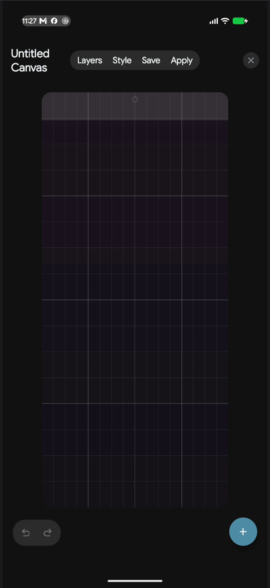
canvas-studio.jpg
Chapter 10
Theme and appearance
Settings › Theme holds five cards: Theme, UI Style, Background, Accent Color and Color Accessibility. Everything here applies immediately — there is no Apply button on this page.
Theme mode
Five options in one row:
- Automatic — follows your phone's light or dark setting.
- Light and Dark — fixed.
- AMOLED — true black backgrounds, for OLED screens.
- Calm — a low-stimulus mode with its own palettes.
When Calm is selected, a Calm Palette row appears with sixteen choices: Rich Sand, Golden Sand, Ocean Blue (default), Navy Ink, Deep Navy, Ember Red, Forest Green, Amber Dusk, Burnt Orange, Deep Plum, Slate Grey, Aurora, Dusk Rose, Tidepool, Copper Night and Sunset Ink.
UI Style
Four styles change how surfaces are drawn across the launcher:
| Style | Look |
|---|---|
| Default | Flat, solid surfaces |
| Frosted Glass | Blurred acrylic that samples your wallpaper |
| Neumorphism | Soft raised plates with real shadows |
| Liquid Glass | Refraction and light-bending glass on widgets, folders and the dock |
Liquid Glass adds three controls of its own:
- Theme color tint — gives widgets, folders and the dock a light touch of your theme colour.
- Tint strength — 25–200%, default 100%. Hidden while the tint is off.
- A scope note explaining that Liquid Glass applies to widgets, folders and the dock, while pages, sheets and search stay frosted.
If you set your wallpaper from outside Nexus — another app, or a live wallpaper — the glass styles need one capture of it before they can blur it. Use Capture wallpaper for frost/liquid glass on the Theme page, or the same row in the wallpaper sheet's System tab. Until then, frosted surfaces look flat.
Background
- Background Layer — Wallpaper or Theme Color. Theme Color replaces the wallpaper with a flat theme colour everywhere, including behind frost.
- Theme-responsive wallpaper — adapts Nexus-made wallpaper colours to the active theme and UI style. It works only with wallpapers applied through Nexus Studio, and the app says so when you turn it on.
Accent Color
- Use accent color — on by default. Turning it off hides the swatches and leaves controls neutral.
- Accent in icon badges — off by default. Tints settings and status-row icon badges with the accent.
- Eight presets — Harbor (default), Mist, Sage, Clay, Sand, Rose, Lilac and Slate — plus a custom swatch that opens a full colour picker. A custom colour is labelled Custom · #RRGGBB.
Color Accessibility (Beta)
Three options: Off, Red-Green and Blue-Yellow. This adjusts accents for colour vision deficiencies; it changes accent colours only, not the whole palette.
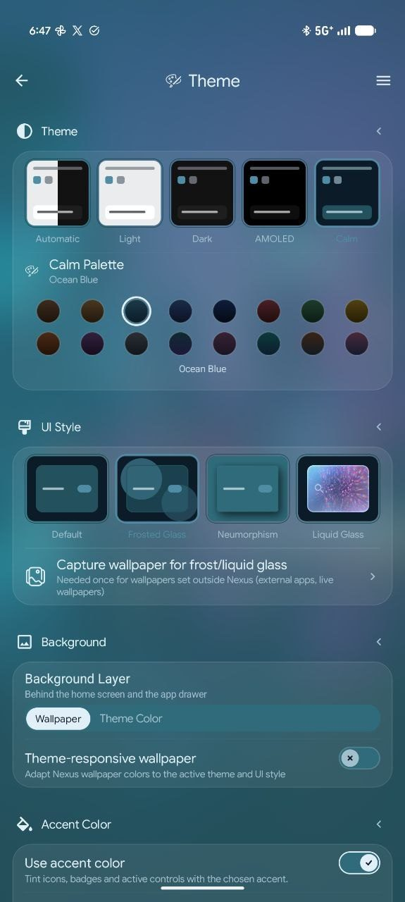
theme-settings.jpg
Chapter 11
Icons
Settings › Icons controls icon size, shape and pack for the whole launcher, with a live preview at the top of the page.
Icon size
Icon Size sets one global size from 32 to 72 dp, default 48 dp, used by the home screen, drawer, dock and folders. Any surface that has its own size set keeps that instead.
Shape
Fourteen shapes are available:
- System
- Circle
- Squircle
- Rounded
- Square
- Pill
- Hex
- Soft Hex
- Octagon
- Diamond
- Pebble
- Teardrop
- Leaf
- Badge
System keeps each app's own mask, so different apps can look different.
Icon pack
- The first tile is always System Default, followed by every icon pack installed on your phone.
- Selecting a pack applies it immediately to the home screen, drawer and dock.
- If you had changed some icons one by one, Nexus asks "Use the new icon pack everywhere?" — choose Keep them to preserve those individual icons, or Switch them to bring them into the pack. Icons made from your own photos always stay as they are.
- There is no in-app store: Nexus uses packs you have installed from elsewhere.
Themed Icons (Beta)
Themed Icons tints icons to match your theme colours. It and a third-party icon pack are mutually exclusive: turning Themed Icons on returns the pack to System Default, and choosing a pack turns Themed Icons off. Nexus tells you which happened.
Changing a single app
- Long-press the app and choose Edit.
- Tap the name to rename it, or pick a new icon from Gallery or Icon packs.
- In the shape carousel, Global means "follow the Theme shape"; any other tile overrides the shape for this app only.
- Apply, or use Reset to return to the system icon, name and shape.
If you change something and try to close the Edit sheet, Nexus asks first instead of quietly dropping your work.
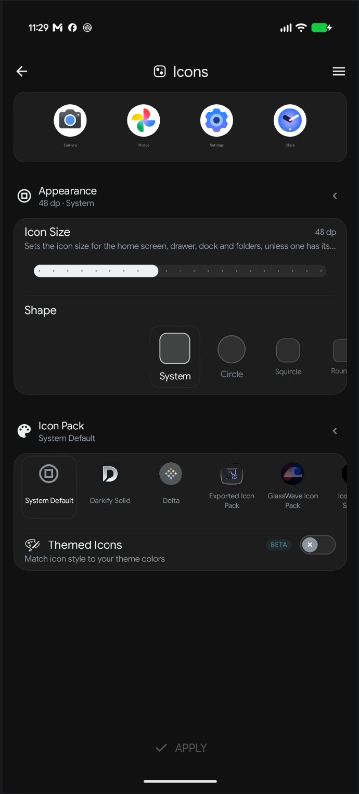
icons-page.jpg
Chapter 12
Typography and language
Settings › Typography changes the font used across the launcher and the language the app speaks, independently of your phone's language.
The preview
A specimen line reads Aa Bb Gg Qq 0123456789 so every typeface can be compared on the same letters, with a sentence in the selected language underneath and an LTR or RTL badge.
Font Family
Fourteen fonts ship with the app:
| Font | Character |
|---|---|
| Nexus Default | Nexus brand typeface (Google Sans Flex) |
| System Default | Your device's font |
| Sans, Serif, Mono, Medium | The classic Android families |
| Roboto | Classic Android geometric |
| Inter | Modern grotesque sans |
| Manrope | Contemporary geometric sans |
| IBM Plex Sans | Engineered grotesque sans |
| Lora | Contemporary serif |
| Playpen | Casual handwriting |
| Elms Sans | Expressive grotesque |
| Bitcount | Single-line retro pixel font |
Choosing a font applies it immediately, everywhere: settings, sheets, dialogs, context menus, the drawer, and the text inside Nexus widgets.
Custom Fonts
Use + Add Font to import a .ttf or .otf file.
Imported fonts appear in the font list and can be deleted later; deleting asks first. A file that
is not a valid font is rejected with a message rather than applied.
Language
Eleven choices: System default, English, Spanish, Portuguese (Brazil), Hindi, Indonesian, German, French, Nepali, Arabic and Hebrew. The sheet shows each language in its own script. Changing language reloads Settings so the new strings appear immediately.
Text and navigation mirror to right-to-left, but your home screen layout does not. Icons, widgets and pages keep their exact positions — a deliberate choice, so switching language never rearranges your work.
Chapter 13
Wallpaper and Wallpaper Studio
Long-press empty home space and choose Wallpaper. The wallpaper sheet is not in Settings; the Theme page links to it for the frost capture step.
The five tabs
| Tab | Contents |
|---|---|
| System | Your current wallpaper, plus the one-time frost capture and a Clear button |
| Nexus | Nine designed presets and twenty-four gradients |
| Studio | Wallpaper Studio: Quick Create, Custom Wallpaper, Edit Current setup |
| Gallery | Your six most recent images, then More / Choose photo |
| Others | Other wallpaper apps installed on your phone |
Nexus presets
Nine wallpapers are designed for the glass styles: Obsidian Stealth, Nexus Core, Frost Aurora, Prism Beam, Liquid Quartz, Cyber Horizon, Monolith, Frosted Capsule and Titanium Grid. The light fields in Frost Aurora, Prism Beam and Liquid Quartz are tuned to show refraction in frosted widgets and folders.
Twenty-four gradients sit in a second carousel, from Winter Woods and Peach Sea to Crimson Tide, Kashmir and Blue and Orange.
Dim and tint
Above the tabs are a live preview and two sliders, Dim and Strength, with a colour wheel. Use them to darken a bright photo or wash it with a colour. The treatment is previewed live before you apply it.
Applying
Apply asks where the wallpaper should go: Home Screen, Lock Screen or Both. Choosing Both sets the lock screen first, so a failure there cannot leave the home screen half-changed. Nexus-made and gallery wallpapers are also written to Android's own wallpaper slot, so the recents screen and system settings show the same image.
Wallpaper Studio
Studio is a design tool for launcher-aware wallpapers. It can start from your current home layout as a reference layer, or from a blank canvas, and offers:
- Shapes — rectangle, rounded rectangle, circle, line, polygon and blob, placed by touch.
- Images — your own pictures with non-destructive brightness, contrast, saturation, tint and opacity.
- Snapping — to cell centres, screen centre and widget bounds.
- Create Backdrop — generates a backdrop underneath selected widgets and folders.
- Undo and redo, plus Wallpaper Only, Home Preview and Grid Preview modes.
- Save and apply, which also syncs the result to the system wallpaper.
Projects are saved so you can reopen and adjust them later.
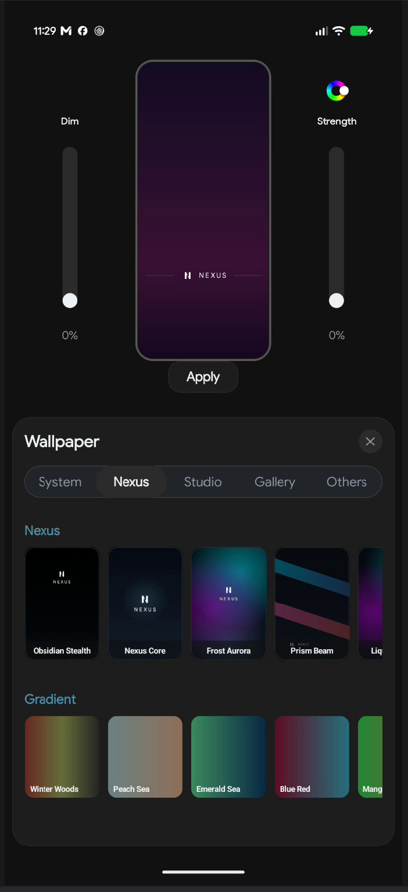
wallpaper-sheet.jpg
Chapter 14
Immersive Mode
Immersive Mode hides Android's system bars and replaces the status bar with one Nexus draws itself. You can shape that row into almost anything, from a single minimal clock to a full row of pills with signal, battery and notifications.
Find it in Settings › Immersive Mode. A live preview is pinned above the settings and updates as you change things.
Turning it on
- Immersive Mode — hides the system bars. Swipe from an edge to bring them back temporarily.
- Hide navigation bar — appears only while Immersive is on. Off keeps the buttons or gesture bar on screen.
Row presets
Four starting points: Minimal, Glass, Ring and Classic. A preset changes appearance only — never which items are shown, the clock style or the font.
Bar Layout
| Setting | Options | Default |
|---|---|---|
| Nexus Status Bar | On / Off | On |
| Position | Top / Bottom | Top |
| Height | 24–48 dp | 28 dp |
| Background | Transparent / Frosted / Solid | Frosted |
| Opacity | 10–90% | 40% |
| Faded background | On / Off | Off |
| Segmented pills | On / Off | On |
| Side padding | 0–24 dp | 0 dp |
| Font | Follow launcher, or a specific font | Follow launcher |
Segmented pills gives each module its own capsule; turning it off draws one continuous bar. Faded background softens the bar's edge into the wallpaper.
What to display
Six items, all on by default. Each has its own style options:
| Item | Styles | Extra options |
|---|---|---|
| Clock | Default, 12-hour, 24-hour, Seconds, With date | Position: Left, Centre, Right. With date adds Date: Short, Long, Weekday |
| Notifications | Count, App icons, Dot | Icons shown 1–10, count silent notifications, count apps instead of notifications |
| Battery | Bar, Capsule, Segmented, Ring, Number only | Percentage: Beside, Inside, Off. Low battery below 5–30%; shimmer while charging |
| Mobile signal | Bars, Arc, Dots | Show carrier name, show band |
| Wi-Fi | Arcs, Bars, Dots | — |
| System icons | Do Not Disturb, alarm, silent and more | On / Off |
Using the row
- Pull down on the row to open the launcher's notification sheet.
- Tap the notification icons or count to open the same sheet.
- Tap the clock to open your alarm app; the battery area opens battery settings.
- Swipe from the screen edge to reveal the real system bars when you need them.
Pick Glass or Ring, then adjust only the items you care about. Changing a preset later keeps your item choices intact, so experimenting is safe.
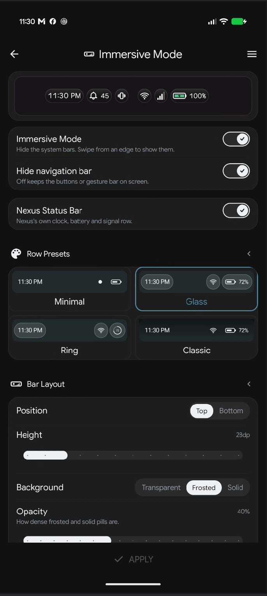
immersive-mode.jpg
Chapter 15
Nexus Island
Nexus Island is an optional morphing pill that sits over your camera cutout. When something happens — a download finishes, a track changes, the battery gets low — it expands briefly to show you, then collapses back to a small capsule.
The Island lives inside Nexus's own status row, which only appears in Immersive Mode. If Immersive is off, the Island page shows a single row reading "Needs Immersive mode"; tapping it takes you there.
Settings
| Setting | Range or options | Default |
|---|---|---|
| Enable Nexus Island | On / Off | Off |
| Size and Position | Opens the calibration sheet; the row shows the current size | 110 × 28 dp |
| Animation speed | 50–150% | 100% |
| Capsule Haptics | On / Off | On |
Calibrating it
Every phone puts its cutout in a different place, so the Island can be moved and resized to sit exactly over it. Open Size and Position:
- Horizontal Offset — −100 to 100, with a Center button.
- Vertical Offset — −25 to 35, with an Align button.
- Capsule Width — 50–260 dp, default 110.
- Capsule Height — 20–44 dp, default 28.
The sheet's guide text explains the goal: align the capsule directly over the cutout, and the status row automatically pushes its information to the sides so nothing overlaps.
Mini Capsule Events
Nine triggers, each individually switchable and all on by default:
- Live activities — downloads, navigation, rides and other apps showing live progress
- Music
- Charging
- Low battery
- Bluetooth
- Timer
- Stopwatch
- Do Not Disturb
- Calendar
If the Nearby devices permission is missing, the Bluetooth row says so and links to the fix.
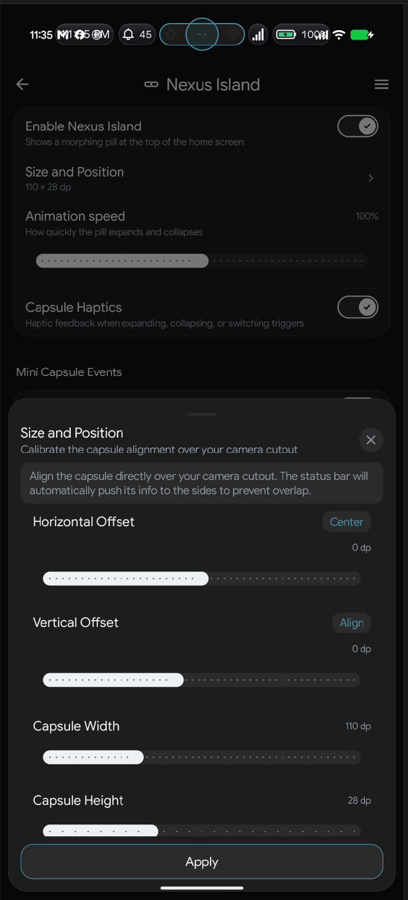
island-calibration.jpg
Chapter 16
Notifications and badges
Nexus can show unread counts on your icons and give you a notification panel of its own, drawn in the launcher instead of Android's. Both depend on one permission: Notification Access.
Badges
Find them in Settings › Notifications & Permissions › Notification Badges.
| Setting | Options | Default | Notes |
|---|---|---|---|
| App Icon Badges | Off / Dot / Count | Dot | Dot is a small dot; Count is a numbered pill, capped at 99+ |
| Folder Badges | Off / Dot / Count | Dot | Totals every app inside the folder |
| Notification Badge Color | Red (default), Green, Blue, or custom | Red | Tap the circle to pick any colour |
Badges appear on home screen icons, dock icons and drawer icons, and update in real time.
Notification history
- Keep notifications — off by default. When on, notifications you have already cleared are still readable in Nexus's own sheet. The text is stored on this phone.
- Keep for — 1 hour, 6 hours, 1 day, 3 days or 7 days.
System & Permissions
The page lists every permission with a counter such as "4 of 8 permissions granted" and a status of Granted, Tap to enable or Enabled. Each row explains what it unlocks, so you can grant only what you need. See Chapter 1 for the full list.
The notification sheet
Open it by pulling down on the immersive status row, tapping its notification icons, or from a gesture you have assigned.
- Swipe a notification sideways to dismiss it; ongoing notifications resist and spring back.
- Tap a notification to open it. Up to three action buttons appear inline, such as Reply or Mark as read.
- Tap body text to expand a long message.
- Clear dismisses everything and wipes the stored history.
- The gear opens in-sheet Notification Settings: keep notifications, retention, Clear History, Group by App, Show Silent Notifications, Notification Listener Access, and Status Bar Appearance.
- Notifications are grouped as Now and Earlier; when there are none, the sheet shows "All Caught Up".
The sheet explains the permission and offers to open the system setting. Badges and the Music widget stay inactive until it is granted.
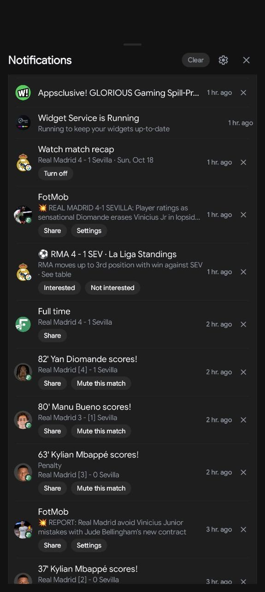
notification-sheet.jpg
Chapter 17
App Lock
App Lock asks for your fingerprint, face or screen lock before a chosen app opens. It protects apps launched from Nexus; Strict Lock Mode extends that to other ways in.
Set it up in Settings › App Lock. Everything on this page applies immediately — there is no Apply button.
How App Lock works
The page opens with a short explanation: locked apps ask for your fingerprint, face or screen lock, and Strict Lock Mode covers other routes into the app.
Authentication required
| Setting | Options | Default |
|---|---|---|
| Opening locked apps | Every time, Until the phone locks, After 1 minute, After 5 minutes | Until the phone locks |
| Opening App Lock settings | On / Off — asks once until the phone locks | On |
| Removing a lock or restoring a backup | On / Off — always asks | On |
Hide content
Cover locked apps' widgets replaces a locked app's widget with its name and Tap to unlock until you authenticate. While locked, notification content and Nexus Island content for that app read "Content hidden".
Strict Lock Mode
- The toggle is described as locking apps opened from notifications, Recents, links or other launchers.
- Turning it on shows an explanation about the Accessibility service, with I understand and enable and Cancel. If the service is off, Nexus opens Accessibility settings and finishes enabling when you return.
- Lock recent apps hides the recents screen behind authentication. It needs Strict Lock Mode and Accessibility, and warns that a locked app or Recents preview may flash briefly before the lock appears.
- Locking recents works with three-button navigation; gesture navigation is not supported for that one feature.
Choosing apps
- Individual apps — a searchable list with a switch per app. Apps already in a lock group are not repeated here.
- Lock groups — create a named group and pick its apps. Group rows have their own enable switch, an app count, and Edit and Delete actions. Deleting a group does not change apps locked on their own or in other groups.
Locking from the home screen
Long-press any app — on the home screen, in the dock or in the drawer — and choose Lock App. The same menu offers Unlock App later, which asks you to confirm your identity first.
App Lock uses your device's own authentication. Without a screen lock, Nexus tells you to set one up before the feature can work.
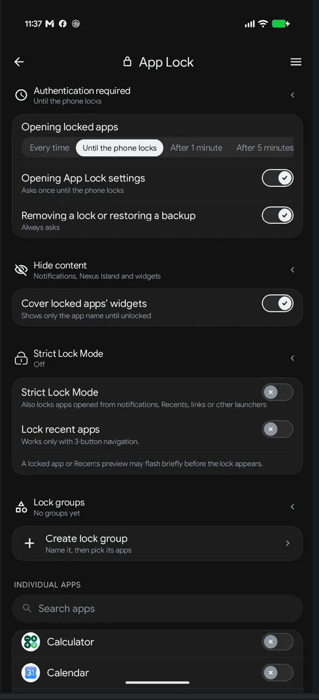
app-lock.jpg
Chapter 18
Search
Search is one field for apps, contacts, sums, conversions and the web. Open it from the drawer's search pill, from a home swipe, from the Search widget, or from the notification sheet's settings shortcuts.
Using it
- The field reads Search Nexus.
- With nothing typed, you get NEW APPS and RECENT APPS, up to eight each.
- Results are grouped as APPS, CONTACTS, CALCULATOR, CONVERSION, WEB and MAPS.
- Two action rows sit at the end: Search web for "…" and Open Maps for "…".
- The suggestion chips show examples: Try: 5km to miles • 25c to f and Try: coffee near me • navigate to airport.
Search settings
Settings › Search has two groups, all on by default:
| Group | Toggle | Description shown |
|---|---|---|
| Micro Actions | Calculator | Solve mathematical equations directly in search |
| Micro Actions | Unit Conversion | Convert currency, metrics and units of measurement |
| Search Sources | Contacts | Show matching device contacts in search results |
| Search Sources | Web Search | Show web suggestions and the default search engine shortcut |
| Search Sources | Maps Search | Show a Maps option when the query has no app or contact match |
The same toggles are reachable from the gear inside the search overlay, so you can change them without leaving what you were doing.
18*7+4 for arithmetic, 12 km to miles for a conversion, and coffee near me for a Maps suggestion. Maps only appears when no app or contact already matched, so it never buries a real result.
Search widget
The Search widget is a compact launcher bar with separate touch targets: the field opens Nexus search, the microphone opens voice search, and larger styles add an apps area, an assistant button and a Lens button. It resizes horizontally only, so it always stays a bar.
Chapter 19
News feed and Library
Nexus includes an RSS reader that lives one swipe to the right of your first home page, and a document Library for things you want to read offline.
Opening and turning it off
- Open: from the first home page, swipe right.
- Turn off: Settings › Home Screen › News Feed › Swipe right to access RSS feed. On by default.
The five tabs
| Tab | What it shows |
|---|---|
| Feed | Your subscriptions, newest first, led by a large hero story |
| Explore | Curated categories to discover new sources |
| Saved | Stories you bookmarked |
| Library | Your documents, with Add Document |
| Settings | Auto-refresh interval, Manage Sources, Add New Source |
Reading
- Tap a story to open the reader. The reader is part of Nexus, so it opens inside the app.
- Long-press a card for its menu: save or remove a bookmark, share through Android's share sheet, or hide the story.
- The header menu collapses the feed into a compact headline-only list — two lines of text per story, no images. Your choice is remembered.
- Category chips below the header filter the feed by topic.
Adding sources
In the Settings tab, paste an RSS feed, a website address or a subreddit into Add New Source. Active sources can be switched off, deleted, or reordered by dragging. A curated catalog fills in sources you do not have yet.
Library
Add Document imports a PDF, EPUB or text file. Documents open in the Nexus reader and stay on the device.
The feed refreshes when you open it if the configured interval has passed — 15 minutes, 30 minutes, 1 hour, 6 hours or 24 hours.
Chapter 20
Backup, restore and sharing
Your layout, folders, widgets and settings can be saved to a single file and restored later or on another phone. Nova Launcher backups can also be imported.
Making a backup
- Open Settings › Backup & Restore › Backups.
- Set Backup Location — choose a folder, internal storage or SD card. Nexus remembers it; if the folder disappears it asks you to choose again.
- Tap Back Up Now. The file appears as a card under EXISTING BACKUPS, showing page and item counts.
Restoring
Tap a backup card to enlarge it, then use Restore. Nexus warns that the current layout, folders and settings will be replaced and that this cannot be undone. Long-press a card to delete it.
A backup stores which widget each item is, not the widget's contents. After restoring, Nexus asks Android to bind each widget again. If something needs your attention, a dialog titled "Restore needs your attention" lists each case:
- App not installed — that widget is removed from the restored layout.
- Needs permission — Android refused the bind; grant the permission and try again.
- Tap it to finish setting up — the widget's own configuration is still pending.
What a backup contains
- Every home item: apps, folders, shortcuts, widgets, Mosaics, boxes and Canvases, with positions, spans, stacking and padding.
- Folder contents and covers, custom app icons, and gallery wallpapers Nexus itself stored.
- All launcher settings, dock settings, theme, typography, language, feed sources, hidden apps, gesture assignments and App Lock state.
- Notes widget content and per-widget configuration.
Not included: the apps themselves. Target apps must be installed on the new phone, or their icons and widgets cannot appear.
Importing from Nova Launcher
Settings › Backup & Restore › Import from Nova Launcher
accepts a .novabackup file. The confirmation is explicit about the trade:
Only app, folder and widget positions transfer. Wallpaper, theme, icon pack and gesture settings are not imported. The import replaces your current Nexus home screen.
Widgets from a Nova backup go through the same re-bind process as a Nexus backup.
Share your setup
Settings › Share your setup turns your home screen into a shareable image.
- Uses a live capture of your home screen, or a custom image you supply.
- Setup settings: Orientation, Background, Screen corner radius, Show Nexus Launcher logo, Frame (None, Rounded, Border, Phone) and Frame color.
- Save image writes a PNG through the system file picker — no storage permission needed. Share opens the Android share sheet.
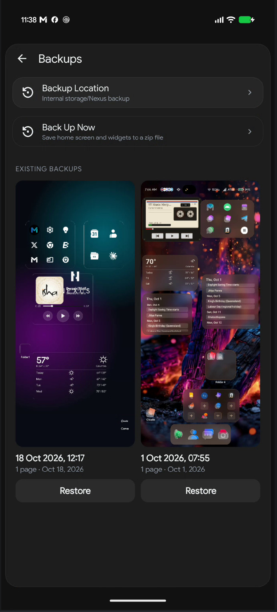
backups.jpg
Chapter 21
Settings map
Settings opens on a hub with a search field. Type any part of a setting's name — or what it does — and results are split into Pages and Settings. The list icon at the top right of any page jumps directly to another page without going back to the hub.
| Group | Page | What is there |
|---|---|---|
| Layout | Home Screen | Grid, spacing, labels, transitions, news feed |
| App Drawer | Mode, columns, sort, search pill, categories, rail, hidden apps | |
| Dock | Size, background, labels, search | |
| Immersive Mode | Status row, pills, clock, battery, signal | |
| Appearance | Theme | Mode, palette, UI style, background, accent, accessibility |
| Icons | Size, shape, icon pack, themed icons | |
| Typography | Font family, custom fonts, language | |
| Nexus Island | Pill enablement, calibration, events | |
| Canvas | Saved designs and Canvas Studio | |
| Behavior | Gestures | Home swipes and action picker |
| Search | Micro actions and search sources | |
| Notifications & Permissions | Badges, history, every permission | |
| App Lock | Authentication policy, groups, strict mode | |
| System | Backup & Restore | Backups and Nova import |
| Share your setup | Shareable home screen image | |
| Licenses | Font and library licenses | |
| Privacy policy | Opens the published policy | |
| Feedback | Send feedback | Report a problem or suggest an idea |
| Send performance report | Frame times from your last home swipes | |
| Crash logs | Read or send saved crash reports |
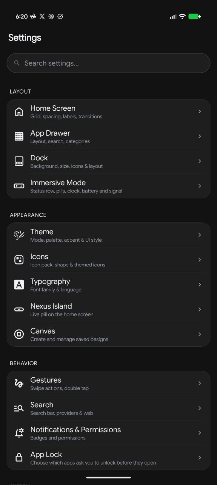
settings-hub.jpg
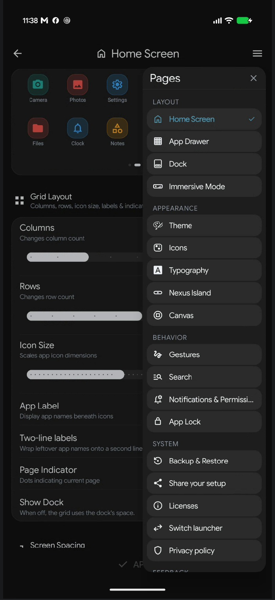
settings-jump.jpg
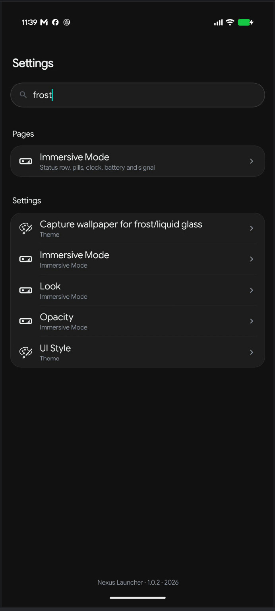
settings-search.jpg
Home Screen, App Drawer and Dock stage changes behind an Apply bar. Theme, Typography, Canvas and App Lock apply immediately. The Apply bar simply is not shown on pages that apply immediately, so its absence is not a bug.
Chapter 22
Privacy, feedback and diagnostics
Nexus keeps your data on the phone. There is no account, no sign-in and no cloud sync; backups are files you choose the location of.
Privacy policy
Settings › Privacy policy opens the published policy in your browser.
Send feedback
Settings › Send feedback opens a form for problems and ideas.
Performance report
If paging feels slow, open Send performance report. It includes frame times from your recent home swipes, plus your version, device, screen and blur decision. If you have not swiped yet, Nexus asks you to swipe a few times first.
Crash logs
After a crash Nexus restarts itself and offers to send a report. The report contains the error, the app version and your phone model. You can read, share or delete saved reports later in Settings › Crash logs; an empty list reads "No crash logs".
Only what you actively send: a crash report, a performance report or feedback. Nothing is uploaded automatically.
Chapter 23
Troubleshooting
| Symptom | Cause and fix |
|---|---|
| Frosted surfaces look flat or plain | Glass needs a captured wallpaper. Use Capture wallpaper for frost/liquid glass on the Theme page. Also check that Background Layer is set to Wallpaper, not Theme Color. |
| No badges on icons | Grant Notification Access in Notifications & Permissions, and check that App Icon Badges is not set to Off. |
| Music widget shows a permission message | It needs Notification Access to read the current track. |
| Recent apps sections are empty | Grant App Usage Access. Search also offers Tap to enable Recent Apps. |
| Weather asks for location every time | Grant Location Access once; the widget then loads directly. |
| Widgets missing after a restore | Read the Restore needs your attention dialog. Widgets whose app is not installed are removed; others may need a permission or their own setup. |
| Cannot delete the last home page | By design — a launcher always needs one page. Add another first. |
| A folder refuses an app | The folder already contains that app. Nexus refuses duplicates rather than creating a second copy. |
| App Lock flashes an app briefly | Documented behaviour of Strict Lock Mode: a locked app or Recents preview may appear for a moment before the lock covers it. |
| Recents lock will not turn on | It needs Strict Lock Mode plus Accessibility, and three-button navigation rather than gesture navigation. |
| Icons jumped after changing columns or rotating | Positions are preserved by proportion and spill into free cells rather than overlapping. Increase rows or columns to give crowded items room. |
| A gesture does nothing | Check the action assigned in Gestures. Lock Screen and some system actions need Accessibility. |
Notes on this build
Three details are worth knowing so they are not mistaken for something you did wrong:
- None and Slide currently animate the same way. If you want the least motion, turn on Reduce Motion as well.
- The radial menu's Lock Layout slice changes its own label to a locked state, but does not yet lock the layout.
- The Progress Bar widget exists in the app but is withheld from the picker in this release.
Chapter 24
Glossary and setup checklist
Glossary
- A–Z rail
- The alphabet strip on the drawer's edge. Drag along it to jump to a letter.
- Canvas
- A free-form design board placed on a home page, built from text, live values, widgets, apps, shapes and images.
- Frost capture
- A one-time snapshot of a wallpaper Nexus did not set itself, used so glass surfaces can blur it.
- Home page
- The page the Home button returns to. Set it from a Manage Pages card.
- Immersive Mode
- Hides Android's system bars and draws Nexus's own status row.
- Living Mosaic
- A widget container holding several widgets across pages, with Mosaic and Focus display modes.
- Nexus Island
- An optional capsule over the camera cutout that expands to show events.
- Radial menu
- The eight-slice menu that opens when you long-press empty home space.
- Strict Lock Mode
- Extends App Lock to apps opened from notifications, Recents, links and other launchers.
- UI Style
- How surfaces are drawn: Default, Frosted Glass, Neumorphism or Liquid Glass.
First-week checklist
Work through this at your own pace. Each item is independent.
- Set Nexus as the default Home app.
- Grant Notification Access if you want badges and the notification sheet.
- Choose a theme mode and one UI Style you like.
- Pick an accent colour, or turn the accent off for a neutral look.
- Set your grid: columns, rows, icon size and label style.
- Pick a drawer mode and a sort order.
- Decide whether the dock stays visible or gives its space to the grid.
- Create one folder for the apps you use together.
- Place one widget you will actually look at.
- Turn on Immersive Mode and pick a status row preset.
- Assign the two home swipes to what you expect them to do.
- Make a backup once the layout feels right.
Every setting in this manual is reversible. If an experiment goes wrong, Reset on the relevant page, or a backup, puts things back.
Nexus Launcher User Guide · covers version 1.0.2 · October 2026.